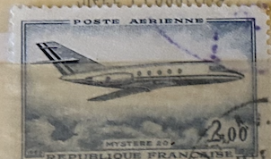
| SOURCE | TITLE| IMAGE MATCH | click to source page |
| eBay | TIMBRE PA N° 42 NEUF * * - MYSTERE 20 - AVION A REACTION | eBay | 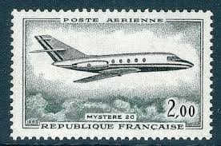 |
| eBay | France - 1965 First Flight Cover Of Boeing 707-320 To New York | eBay | 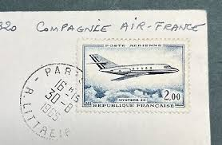 |
| Stampian Stamp (@stampian) • Facebook | 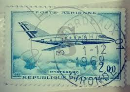 | |
| Stamp Community Forum | Help Identify France 1960 Airmail - Mystere 20 - Stamp Community Forum | 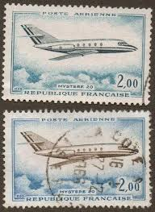 |
| eBay | 5/65 RARE PUB DASSAULT SUD-AVIATION MYSTERE 20 FAN JET FALCON PAN AM ORIGINAL AD | eBay | 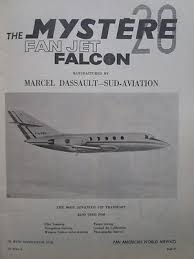 |
| Redbubble | Vintage France Mystere 20 Jet Plane Postage Stamp" Poster for Sale by red-amber65 | Redbubble |  |
| 123RF | Cancelled Postage Stamp Printed By Congo, That Shows Plan Of Recovery, Circa 1963. Stock Photo, Picture and Royalty Free Image. Image 136064570. | 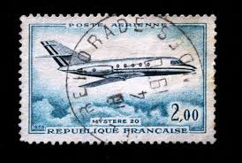 |
| CiBaFil | FRANCE 2012 Philatelic Congress (Belfort) MNH** |  |
| Todocolección | 1960 francia, escudo de armas de lille, yvert 1 - Buy Antique stamps of France on todocoleccion | 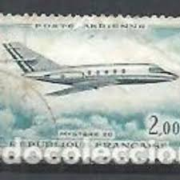 |
| eBay | RJW: FRANCE-UNIQUE FDC- PM PARIS-LE BOURGET AIRPORT JUNE 12, 1965 | eBay | 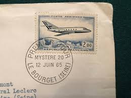 |
| Airport-Data.com | Aircraft Data F-BMSS, 1965 Dassault Falcon 20F C/N 2 | 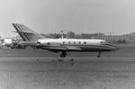 |
| Todocolección | francia, 1955, uzerche, limousin, yvert 1040 - Buy Antique stamps of France on todocoleccion | 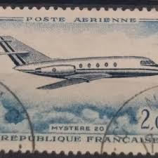 |
| eBay | PAN AM FAN JET FALCON BIZ JET STANDARDS SET BY WORLDS MOST EXPERIENCED 1966 AD | eBay | |
| WordPress.com | Dassault Mystère 20: Longue vie au Roi. | Aviation Rapture | 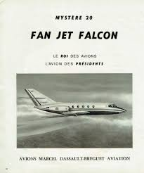 |
| eBay | Reunion, Postage Stamp, #C51 Mint LH, 1967 French, Airplane | eBay | 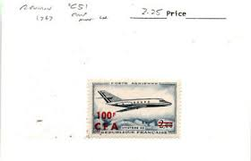 |
| eBay | French Air Force Mystere 20 at Metz Air Base, France | eBay | 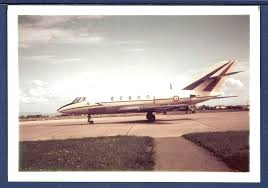 |
| Bobby Patton - Blackhawk Modifications Inc. | LinkedIn | 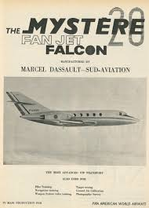 | |
| epicamlv.com | Avions Marcel Dassault Breguet Aviation 2025 | www.epicamlv.com | 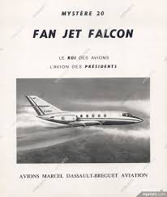 |
| eBay | AEROSPATIALE FRANCE CORVETTE LIGHT TWIN TURBOFAN 1976 JUST RIGHT FOR TODAY AD | eBay | 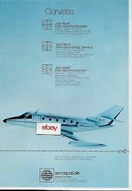 |
| Air & Space Forces Magazine | SEARCH IND SAVE I | 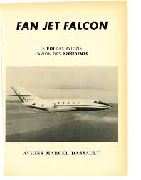 |
| eBay | MARCEL DASSAULT FAN JET FALCON EXECUTIVE AIRCRAFT L'AVION DES PRESIDENTS AD | eBay |  |
| University of Miami | Fan Jet Falcon, June 1965 - Page 1 - Pan American World Airways Records - Digital Collections | 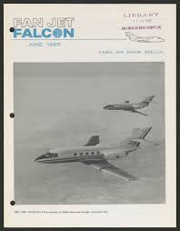 |
| a1blowers.com | Mens Grey Sherpa Hoodie Grey Mens Sherpa Sweatshirt Men's Warm Sherpa Lined Hoodie Jacket | 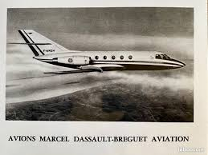 |
| Airlinercafe | Lost Schemes: #271 Hughes Airwest Dassault Mercure (1974) – Airlinercafe | 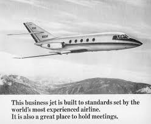 |
| eBay | Dassault Falcon 20C Aircraft in flight- 7x9.5 B&W Print Photo -Aviation Airplane | eBay | 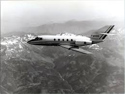 |
| Redbubble | Poster for Sale avec l'œuvre « Vintage France Mystere 20 Jet Avion Timbre-poste » de l'artiste red-amber65 | Redbubble | 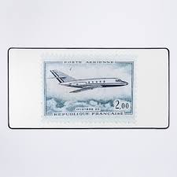 |
| TAG Aviation Falcon 10 HZ-AO2 at Paris Le Bourget, early 1980's. | 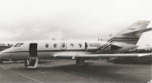 | |
| eBay | 1979 FAN JET FALCON 20 PRINT AD FRENCH AIRPLANE VINTAGE PRINT AD | eBay |  |
| eBay | France 1946-1965 Airmail 6 Pcs Used stamps ,VF Condition, See Photos | eBay | 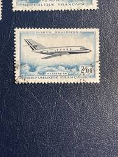 |
| Flight Manuals | DASSAULT MYSTERE 20 (FAN JET FALCON) - Flight Manuals | 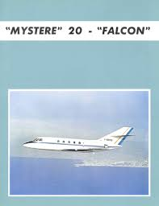 |
| Dassault Falcon 20 first flown May 4th, 1963. | 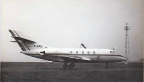 | |
| AirHistory.net | Aircraft Photo of PH-JSB | Aerospatiale SN-600 Corvette | Jetstar Holland | AirHistory.net #540688 | 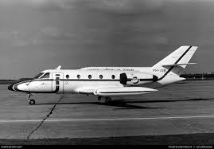 |
| AirHistory.net | Aircraft Photo of HZ-AO2 | Dassault Falcon 10 | TAG Aviation | AirHistory.net #659535 | 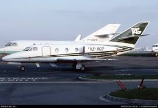 |
| eBay | David Mondey (Ed) THE INTERNATIONAL ENCYCLOPEDIA OF AVIATION law medicine physic 9780517531570| eBay | 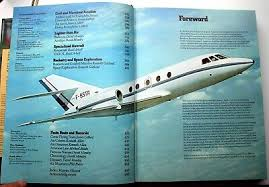 |
| AviaDejaVu | Air Pictorial 1977-05 | 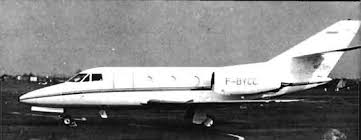 |
| Scalemates | Mystere 20, Heller Cadet L041 (1969) | 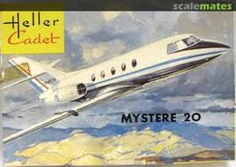 |
| aviator.nl | Dassault Mystère 20 photos | 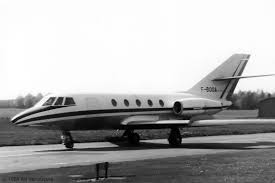 |
| Aviastar.Org | Aerospatiale SN-601 Corvette - multi-purpose | 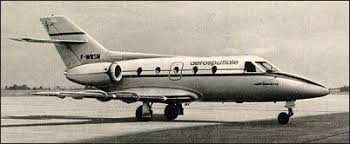 |
| Aviation Week | From The Archives: Mystere 20 Executive Jet Pilot Report | Aviation Week Network | 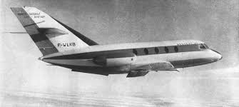 |
| eBay | 1966 Fan Jet Falcon: Business Jet Built To Standards Vintage Print Ad | eBay | 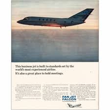 |
| JetPhotos | Eurojet Italia aviation photos on JetPhotos | 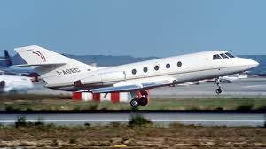 |
| Dassault - #60YearsOfFalcons | Facebook | ||
| The Pan Am Historical Foundation | The Pan Am Historical Foundation - Pan Am - Jet Age Era | 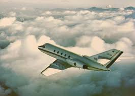 |
| Fandom | Tutti dentro | Internet Movie Plane Database Wiki | Fandom | 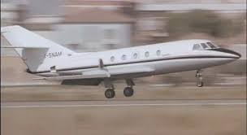 |
| ABPic | Aviation photographs of Registration: I-ATMO : ABPic | 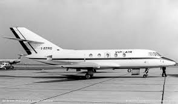 |
| Dassault Falcon 20 French Air Force at landing (Copyright DR) | 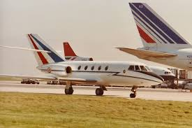 | |
| Media Storehouse | Dassault Falcon 20C F-BMSS Print circa 1971 London Heathrow. Art Prints, Posters & Puzzles from Mary Evans | 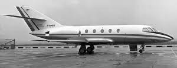 |
| 2017, (not Heller kit, but Air France 🇫🇷 titles/emblems decals are) MikroMir 🇺🇦 No. 144-018, 1/144: -Dassault Mystère (Falcon) 10 Business Jet (fastest in it's category at 915 km/h, 2x Garrett 🇺🇸 | 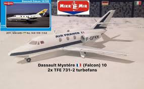 | |
| Alamy | Dassault aviation falcon Black and White Stock Photos & Images - Alamy | 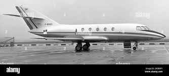 |
| Aircraft.com | PR-CDF | 1979 DASSAULT FALCON 10 on Aircraft.com | 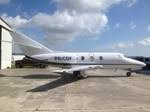 |
| ABPic | Aviation photographs of Registration: F-BTTU : ABPic | 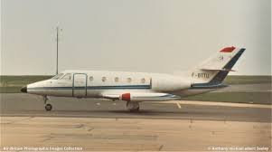 |
| Key Aero | Mystère 20 – First of a Family of Bizjets | 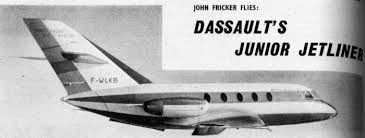 |
| aeroboek.nl | AeroBoek PH-OMC | 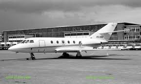 |
| The Airchive | Pan Am Airlines Memorabilia - The Airchive 2.0 | 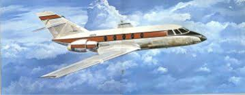 |
| The Box Art Den | Dassault Falcon 20T-960 | 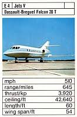 |
| Berliner Zinnfiguren | Berliner Zinnfiguren | Mach 2 | |
| photovault.com | N993F, Dassault-Breguet Falcon 20-5, Falcon 20, GenAv, Photo | |
| AviaDejaVu | Air Pictorial 1977-06 | |
| ABPic | Aviation photographs of Registration: F-BSQU : ABPic |